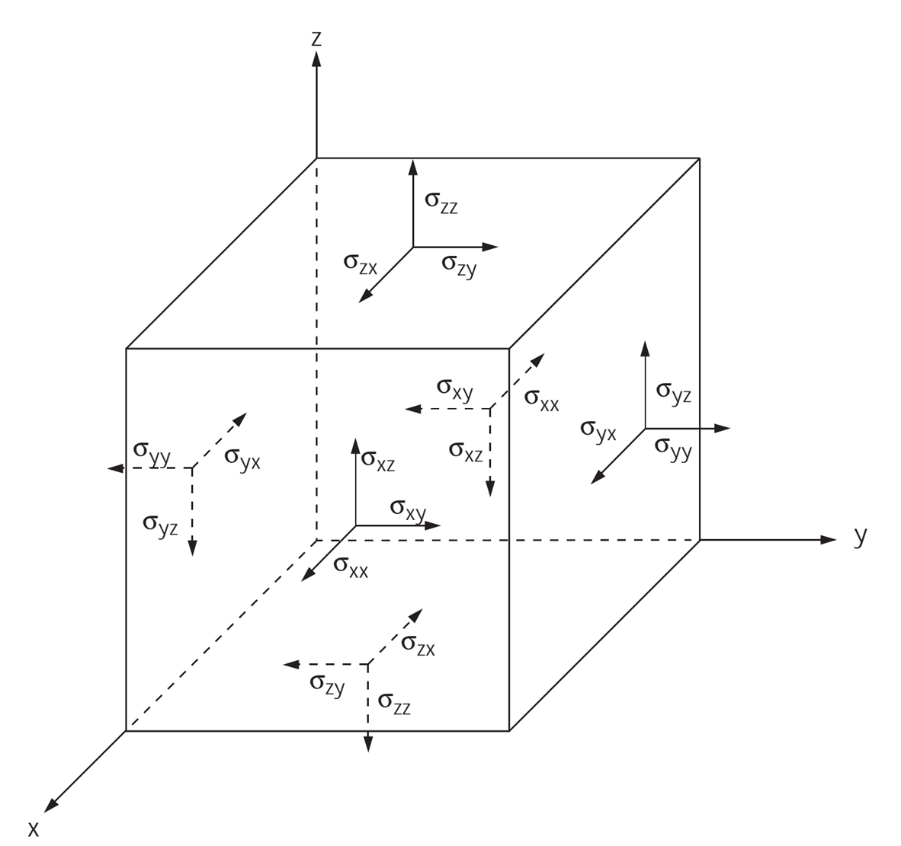
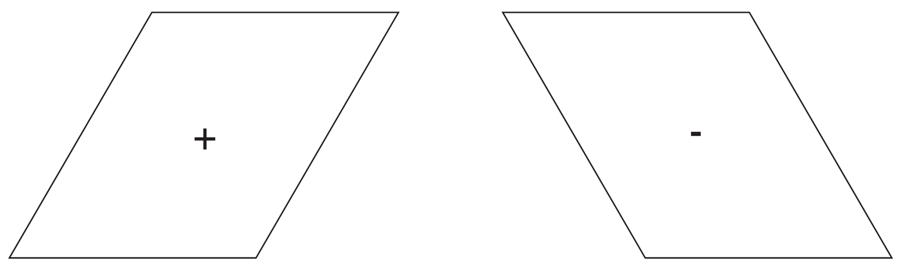
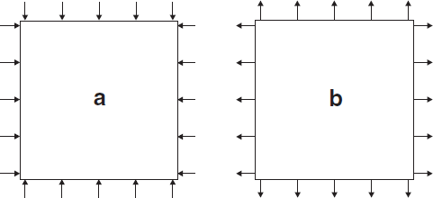

符号约定
本页基于文档的 PFC 版本，并加入了 FLAC3D 相关内容。
输入数据或评估结果时，必须牢记以下符号约定。
- 正应力
- 正应力表示拉应力；负应力表示压应力。
- 剪应力
参照 图 1（Figure 1），若正剪应力作用于外法线沿正方向的面上，则其指向第二个下标对应坐标轴的正方向。反之，若该面的外法线沿负方向，则正剪应力指向第二个下标对应坐标轴的负方向。图 1（Figure 1） 中所示应力均为正。应力张量是对称的（即互等剪应力相等）。

图 1：正应力分量的符号约定。
正、负剪应变对应的畸变示于 图 2（Figure 2）。应力可由 PFC 中的 测量球（measurement spheres） 获得，或由 FLAC3D 中的网格单元获得。

图 2：正、负剪应变对应的畸变。
- 应变率
- 应变率的约定与应力类似。应变率可由 PFC 中的 测量球（measurement spheres） 获得，或由 FLAC3D 中的网格单元获得。
- 接触力
- 每个接触力向量均可相对于接触面分解为法向分量和切向分量（详见“接触分解（Contact Resolution）”一节）。法向接触力垂直于接触面作用，切向接触力则在接触面内作用。正法向接触力表示压力；负法向接触力表示拉力。
- 接触应力
- 接触力除以与该接触关联的面积。其符号约定与接触力相同。
- 矢量量值
- 所有矢量量（例如力、力矩、位移和速度）的 \(x\)、\(y\)、\(z\) 分量，当其指向全局 \(x\)、\(y\)、\(z\) 坐标空间的正方向时为正。


以下内容取自 FLAC3D（PFC 中没有）
- 正应变
- 正应变表示拉伸；负应变表示压缩。
- 剪应变
- 剪应变遵循剪应力的约定（见上文）。
- 压力
- 正压力垂直于物体表面且指向表面（即推压）。负压力垂直于物体表面且背离表面（即拉拽）。下图说明这一约定：

图 3：力学压力：(a) 正；(b) 负
| 这些内容对您有帮助吗？… | FLAC3D © 2019, Itasca | 原文更新于 2020 年 10 月 8 日 |